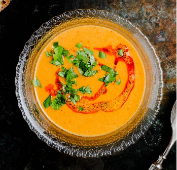

Turkish Lentil Soup

Description
Turkish Red Lentil soup (kırmızı mercimek çorbası) is velvety, comforting, and nutritious. Made with lentils, veggies, spices and ready in 30 minutes.
Ingredients
- 5 TBSPs olive oil
- 1 medium onion
- 3 garlic cloves
- 4 carrots
- 1 potato
- 2 TBSPs tomato pasts
- 2 TSs Aleppo pepper
- 1 TS cumin
- 1/2 TS coriander
- 1 cup red lentils
- 1 large lemon
Directions
- Heat up a pot with oil. Add in the onions, garlic, carrots, potatos and cook until vegetables are soft. Add salt, pepper and tomato paste. Add broth, pepper, and spices.
- Add lentils and stir. Allow soup to come to a boil for 5 minutes, lower heat, cover and simmer for 20 minutes.